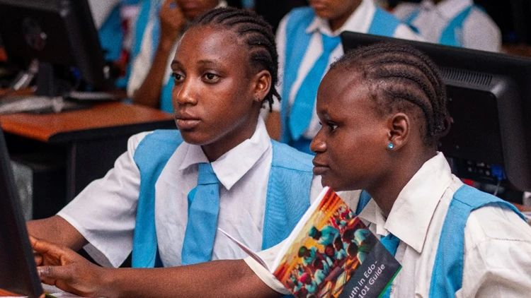

שנתיים של למידה בשישה שבועות – מהפכה חינוכית בניגריה בהובלת בינה מלאכותית 🎓
פורסם במקור ב LinkedIn
שנתיים של למידה בשישה שבועות – מהפכה חינוכית בניגריה בהובלת בינה מלאכותית 🎓
בכיתה בניגריה, במקום לוח וגירים בלבד, התלמידים יושבים מול טאבלטים, וה"מורה" החדש שלהם הוא לא אדם – אלא צ'אטבוט מבוסס AI. אבל אל תטעו - המורים לא נעלמו. להפך, הם קיבלו כלי עוצמתי שמעצים את עבודתם.
בקיץ 2024 התקיימה תוכנית פיילוט חדשנית: מאות תלמידים השתתפו בתוכנית לאחר שעות הלימודים, בה שולבו AI גנרטיבי ופעילות מודרכת. המטרה: לסגור פערים לימודיים, להקנות מיומנויות דיגיטליות, ולבנות בסיס איתן להצלחה בעולם טכנולוגי.
התוצאות מרתקות: בתוך שישה שבועות בלבד, התלמידים התקדמו בשווי ערך לשנתיים של למידה רגילה.
פערים מגדריים צומצמו: בנות, שהתחילו מאחור, הדביקו ואף עקפו את הבנים.
תלמידים שנכחו יותר ימים – הראו הישגים משמעותיים יותר. כל יום נוסף בתוכנית יצר הבדל!
🛠️ איך זה עבד בפועל?
AI ככלי תומך למורים: הצ'אטבוטים לא נועדו להחליף מורים, אלא להעצים את יכולותיהם. לדוגמה, הצ'אטבוטים סיפקו הסברים מפורטים ושאלות תרגול מותאמות אישית בזמן שהתלמידים עבדו בקצב שלהם. המורים יכלו להתמקד בתלמידים שזקוקים לעזרה אישית.
משחקים וחידונים מותאמים אישית: התלמידים עסקו באתגרים חינוכיים כמו חידוני מילים באנגלית, שבהם ה-AI סיפק משוב בזמן אמת.
שילוב עולמות תוכן חדשים: מעבר לשיפור באנגלית, התוכנית חשפה את התלמידים לרעיונות בסיסיים בתחום הבינה המלאכותית – עולם שכל כך חשוב להכיר, לא משנה היכן גדלת.
🌍 למה זה חשוב?
התוכנית הזו מוכיחה משהו קריטי: עם הכלים הנכונים, אפשר להתגבר על פערים חינוכיים עצומים – במהירות, ביעילות ובשוויוניות. ניגריה, מדינה עם אתגרי חינוך עצומים, הצליחה להראות מה קורה כשמחברים חדשנות טכנולוגית עם חינוך מותאם אישית.
🤔 איך אפשר ליישם את זה אצלנו?
דמיינו בתי ספר בישראל שמאמצים תוכניות דומות. כיתות עם תלמידים מכל הרקעים לומדים בקצב שלהם, נתמכים ב-AI שמספק משוב מיידי, ומורים שיכולים להתמקד בהכוונה אישית. טכנולוגיה כזו יכולה לשנות לא רק את ההישגים הלימודיים, אלא גם את חוויית הלמידה עצמה – להפוך אותה לשוויונית ומעשירה יותר.
מה דעתכם? האם אנחנו בישראל, כפרטים וכחברה, פתוחים לשלב AI באופן עמוק במערכות החינוך שלנו? 💭
